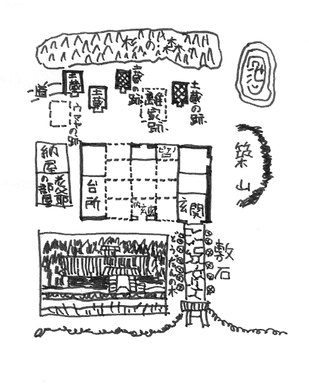

| 棚田裁判長の怪死 | |
| 橘 外男 | |
| (2012) | |
棚田裁判長の怪死
橘外男
一 家老屋敷
その不可解な死を遂げた判事の棚田晃一郎氏だけは子供の時分からよく知っています。私とは七つ八つくらいも年が違っていたかも知れませんから、学校や遊び友達が一緒だったというのではありませんが、棚田の家は広い田圃
を距
てて私の家とちょうど向合いになっていました。私の父はその頃この小さな町の農事試験場の技師をして、官舎に住んでいましたが、田圃を距てた埃
っぽい昔の街道の向う側に城のように巍然
たる石垣や土手をつらねているのが棚田の家だったのです。
もともと棚田の家は、この町の旧藩の城代家老
の家柄といわれているだけに、手狭な私の家とは違って敷地も広ければ、屋敷もあたりを圧して宏壮
を極め、昼でも暗い鬱蒼
たる竹藪
に沿うて石礫
だらけの坂道を登って行くと、石垣を畳んだ大きな土手の上には黄楊
の垣根が竹藪と並行に小一町ばかりも続いているのです。そして広々とした石段の向うに、どっしりした冠木門
がそびえています。苔
の生えた御影石
の敷き石の両側に恰好
のいいどうだんを植えて、式台のついた古風な武家づくりの玄関といい、横手に据えられた天水桶
代りの青銅の鉢といい、見上げるような屋の棟や、その甍
の上に蔽
いかぶさった深い杉の森といい、昔裃
を着けた御先祖が奥方や腰元や若党たちに見送られて供回り美々
しく登城する姿なぞもそぞろに偲
ばれましたが、それだけに腰元もいなければ供回り若党も一切なく、母親と女中と下男
夫婦と、いつ行って見てもひっそりと静まり返っている小人数の棚田家というものは、何か大家の没落したような一種の侘
しさを子供にも伝えずにはいませんでした。
しかも淋
しい感じを与えたのは、何もそんな大きな屋敷や、古い石垣のせいばかりではありません。子供心にも何ともいえず薄気味悪かったのは、祖母からしょっちゅう聞かされた棚田の先祖の話だったのです。
棚田の家の裏手に大きな杉の森がそびえていることは、今も言ったようなわけでしたが、この森の中には、昔から土蔵がいくつか飛び飛びに並んで、奥庭の築山
の裏手には、真っ青な水の澱
んだ広々とした沼があって――それも一個人所有の池とも思えぬくらい広々とした沼があって、その涯
は一面の雑木林が野原の中へ溶け入っているのです。この野原へ出ると、芒
や茅
の戦
いでいる野路の向うに、明神
ヶ岳
とか、大内山
という島原半島の山々が紫色に霞
んで、中腹の草原でも焼き払ってるのでしょうか、赤い火がチリチリと煙
っているのが夏の夕方なぞよく眺
められました。祖母の言うのには、棚田さんへ遊びに行っても、裏の杉の森や、池の近くへはどんなことがあっても行ってはいけないよ。あすこには昔仕置き場があって、殺された人の怨霊
が迷ってるから、幽霊が出るんだよ、と何度やかましく注意されたかわからないのです。祖母の言うのには、棚田の何代目かの先祖に――確か四代目とかいったようでしたが、癇癖
の強い、とても残忍な性質の家老があって、人を殺すことなぞ、虫ケラ一匹ひねり潰
すほどにも感じてはいなかったというのです。奥方は早くに亡くなって、お気に入りの美しい腰元が身の回りの面倒を見ていましたが、この腰元さえも、自分のいうことを聞かないといって、責めて責め抜いた挙句の果てに、手討ちにしてしまったというのです。
今でも私が覚えているのは祖母の話を聞きながら、どうしても子供の私の腑
に落ちなかったのは、なぜこの腰元を手討ちにしてしまったかということでした。高が自分の言うことを聞かないくらいのことで殺してしまわなくてもいいじゃないか！ と不満に思わずにはいられなかったのでしたが、大人になるに従って祖母が細かく説明し得なかった、その辺の事情も、ハハア、なるほどな！ と飲み込めるようになってきました。幼い私に聞かせるのは憚
って、祖母が言葉を濁していた、そのお手討ちというのも横恋慕を聞かれなかった家老の嫉妬
心からだったのでしょう。が、子供にとって事実の真相なぞはどうでもよろしいことだったのです。皺
だらけの白髪の祖母が思い入れよろしくあって......こう細い手を伸ばして責め折檻
する時の顔の怖さといったらありません。叫ばんばかりの気持で、私は祖母の袂
を摑
んでいましたが、ともかくその何代目かの主人の勘気に触れて、美しい腰元は責め殺されてしまいました。しかも責め殺したことが世間へ洩
れるのを憚って、家老は女の実家から何度問い合せがあるにもかかわらず、どうしても事の真相を明かしません。お家の法度
を破って男を拵
えて、逐電
した不届き至極な奴め、眼に入り次第成敗いたしてくれん！ と猛
りたつようなことばかり並べたてて、表面を繕
っていました。武家には頭の上がらぬ昔のこと、娘のそういう不都合な所為のあるはずもない、これには何か深い事情があることと思っても、並ぶものない権力者の御家老に向って、そういうことの面と言えるはずもなし、女の家では泣き寝入りをしてしまいましたが、どうしても［＃「どうしても」は底本では「とうしても」］
諦
めることのできなかったのは、その腰元の許嫁
だったのです。この許嫁は、子供の頃から寺へやられて出家していましたが、この坊さんだけは真相を聞かぬ限り何としても、自分の許嫁の失踪
には諦めがつかなかったのです。逐電したならしたで、どうかその顚末
を聞かせて欲しい、とたびたび棚田の屋敷へ足を運んで来ましたが、もちろん当主が逢
おうはずもありません。いい加減なことばかり並べたてて追っ払っていました。が、この残忍な、我儘
な家老の評判はあちらこちらに響き渡っていましたから、ハハア！ と僧にも頷
けるものがあったかも知れません。が、確かに許嫁は殺されているとは思っても、実否もわからないことですし、無念を晴らしてやりたいとは思っても、相手は殿様を除いては土地随一の威権赫々
たる御家老では力のない僧侶の身には手も足も出るものではありません。
思い余ってある時、この坊さんは、秘蔵の一管の尺八を携えて、家老の屋敷へ忍び入って来たことがありました。家老はちょうど御殿へ出仕して留守でしたが、少し頭のおかしくなった坊さんは、池の岸によろよろとそびえ立ってる松の根方に腰を降して、携えて来た尺八を取り出しました。静かにこの屋敷の内のどこかで死んでいるであろう許嫁の腰元の魂に、せめては昔から好きであった、この尺八の音を聞かせてやりたいと思ったのでしたが、やがて歌口を湿して吹き出してきた曲は、泣くように、咽
ぶように、力ない人間の不甲斐
なさを天に訴えているとしか見えません。
「その音色が澄んでね、人の心の中へ溶け入って事情を知らない人が聞いても、しんみりと涙の湧
いてくるような気持がする時分にね、御家老が御殿から帰っていらしたんだよ」
「ほう、誰か尺八を吹いてるな」
と身につまされるような気持で、家老は馬から降りてしまいました。いつもに似ず、静かに静かに腕を組みながら、ソロリソロリと長い敷石道も忍びやかに、出迎えの人たちも眼顔で制して、居間へはいっても障子の陰に突っ立ったまま、じっと池の方へ聞き耳をたてていました。やっと尺八を吹き終えた坊さんは、笛を袋へ納めると、眼に一杯涙を湛
えながら屹
と屋敷の方を睨
みつけていました。
「お高！ これで俺の気持がわかったろう？ どこに眠ってるか知らねえが、成仏してくれよな。行くところへ行きなよ。だが口惜
しかんべえ、なあお高！ 人に怨
みがあるものか、ねえものか、鬼になって棚田の家に仇
を返してやれ！ 生き代り生まれ代って祟
りをしてやれ。棚田大膳の家に三代たたぬ間に見ろ！ この屋敷にぺんぺん草を生やしてくんど！」
そして僧はそのまま野原の方へ歩みを移してしまいましたが、涙ぐまんばかりに凝然と耳を澄ませていた、我儘
な家老の心に、また途端に残忍とも、酷薄とも言わん方ない気持が蘇
ってきました。こんな生若い許嫁
があったばかりに、自分のいうことを聞かなかったのかと思うと、怒りに眼が眩
んできたのです。
「怪
からん奴じゃ、無礼千万な！ 勝手気儘に執権の屋敷へはいりおって！ 宗八、剛蔵、確之進！ 追い駈
けて行って、搦
め捕ってこれへ引き据えエ！」
青筋たてた悪鬼のような主人の下知
に、早速家来たちは僧の後を追い駈けましたが、骨強い、おまけに反感を持って、頭のおかしくなっているこの僧が、なかなか家来たちのテゴチにおえるものではありません。主人が主人なれば、家来もまた家来......主人を嵩
に着た家来たちのために、到頭高手
小手
に締め上げられてしまいました。
「殴
ったり蹴
ったり、散々に責め嘖
んだ挙句、あろうことかあるまいことか！ しまいには、その坊さんにね、此奴
が腰元をそそのかして、主人の家の金を持って逃げようと企
んだなぞと濡
れ衣
を着せて、殺してしまったんだよ。おまけに、酷
いことをしたんだよ。ほら、お祖母さんが一人で行ってはいけないよと、口癖のように言っている池があるだろう？ あの池の回りにね、昔はお仕置き場があったんだが、そのお仕置き場の回りにぐるっと竹矢来
を結って......」
何月何日には見せしめのために、火焙
りの刑を処すると、近郷近在に触れを回しました。そして大勢見物人たちの犇
めいている中で......、
「高手小手に締められた坊さんの回りに、山ほど薪
を積み上げて、生きながらの火焙りにしてしまったんだよ。薪から着物に火が燃え移って、ジリジリジリジリと身体の膏
が燃え出す。七転八倒の苦しみをして、『己れ棚田大膳！ 暴虐の限りを尽し、無実の罪を被
せおって！ 人に怨みがあるものかないものか！ 見よ、見よ、ここ三代が間に汝
の屋敷にぺんぺん草を生やしてくれん！』『ええ、喧
しいやい、ソレ、もっと薪を焼
べろ！』と到頭焼き殺してしまったんだよ」
幼い私は溜息
をつきながら祖母を見上げていました。
「ところがどうだろう、人の一念というものは恐ろしいもんでね、その真っ黒に燃え切って、坊さんの身体がもういいだろうと薪を取り除
けた途端、大膳めがけて二足三足歩き出したというんだよ。見物人が顔色変えてワァッと逃げ出す。歩き出したその坊さんの身体が、途端に何かに躓
いて、バタッと倒れて......倒れると同時に、土煙を挙げて粉々の灰になってしまったんだよ。だからお祖母
さんがいつでも言ってるだろう。夕方誰も通らぬ時に、あんなところを一人で歩いていると、今でもその坊さんが怨
めしそうな顔をして、芒
や茅
の向うに、朦朧
と映ってくるんだよ。細い声を出して、モシモシこの辺にお高という腰元の働いている棚田という家はありませんかい？」
と私は堪
らなくなって祖母の袂
の中へ顔を突っ込む。
「ハハハハハハいいんだよ、いいんだよ、もう話はおしまいだよ。
お前があんなところへ行きさえしなければ、そんなに怖いものは出て来ないのだよ」
と祖母は私の頭を撫
でて、怖い話を止めにするのでしたが、全身真っ黒に焼け切ってから、歩き出して、ボロボロの灰になった男というのは、何もあながち、棚田の仕置き場の僧侶に限った話ではありません。後年、私が読んだ講談本にも、豊臣秀吉の家来で、泉州堺の町を焼き払った何とかいう豪気な侍が、火焙
りの刑に処せられた後、眼も鼻も口もない真っ黒けな焼死体になってから歩き出して、倒れたら粉々の灰になったということが出ていたような気がします。こういう怪奇な伝説に、奇怪な物語はつきものかもしれませんが、しかし別段祖母がウソ飾りをつけ加えているらしくもないのです。
いずれにせよ、私が祖母から聞かされて怖がっていた、四、五十年以前のあの上小路あたりの淋
しい景色を思い出しますと、祖母の話してるのは、いわんや、それからさらに百年も二百年も昔のことであってみれば、昼間でも狐
の啼
きそうな、侘
しい山里の武家屋敷の中には、そういう横暴な家老もあれば、また腰元や僧侶がなかったとは、一概には言えぬような気もするのです。が、そういう気味の悪い因縁のついた恐ろしい家の中に育ちながら、平気で暮している髪の真っ黒な眼の涼しい棚田晃一郎という年下の友達を、何か超自然的なもの......いわば神秘に包まれた武家屋敷の中の若様といったような気持で、眺
めていたことだけを今もハッキリと覚えているのです。
二 姉の死
年齢に懸隔がありますから、そうしょっちゅう一緒に遊んでいたというのではありませんが、時々は祖母の戒めも忘れて、棚田の家の奥深くはいり込んで近所の子供と一緒に鬼ごっこなんぞをして遊んだこともあります。そして遊びほうけて、野原へ走り出て、池の端の大木のうつろなぞに隠れているうちに、水の面に薄
らと夕靄
が漂って、ゴウンゴウンと遠くから鐘の音なぞが聞こえてきます。途端にこの辺に棚田という屋敷はありませんかい？ と耳許
で細い声がしたような気がして......今外へ飛び出せば鬼に捕まるということも忘れて思わず表へ躍り出す......。
そうした幼時の思い出の数々を私は持っています。が、村の小学校の四年生の時、父が東京の本省へ転勤になったために、この草深い田舎の生活を棄てて私は東京へ出て来ました。その後二年ばかりもたつと私はさらに父の転任につれて長野へ行き、前橋へ行き、浦和へ行き、この浦和で祖母は七十六歳の高齢で世を去ってしまいました。もちろん大村を離れて以来、口へ出してどうのこうのと、棚田のうわさを言ってたわけではありません。が、恐怖は身に沁
みていたとみえて、大村を立ち去ったことを――というよりも上小路の家を立ち去ったことを、しみじみ喜んでいる風に見えました。
「そんなことをいうと、お前はまたお祖母さんをバカにするかもしれないがね。あの時分は夜が明けても、ほんとうに何だか鬱陶
しい厭
な気持がしてね、気のせいかもしれないけれど誰の顔を見ても何だかこう......気のめいりそうな憑
きものでもしたような顔をして朝から日暮れ方みたいな気がしたよ」
と心から吻
っとしたように、祖母はザブリザブリと湯槽
の中で顔を洗いながら念仏を唱えています。
さて、私が絶えて久しい棚田の晃一郎氏に逢
ったのは、それから何年くらいもたった時分だったでしょうか？ その頃には、父も退隠して、最後の任地であった気候の穏やかな静岡の郊外で、悠々と余生を送っていました。私も大学を卒業して大学病院の実習も終り、一人前の医師になって、久しぶりで静岡の父母の家へ遊びに行っていた時ではなかったかと思いますが、一遍お訪ねしろ、お訪ねしろと母からもやかましく言われていますが、なかなかそんな暇もないんですからと、夏休みで大村へ帰る時にわざわざ晃一郎氏が訪ねて来てくれたことがありました。
子供の時分は色白な顔をしていたようでしたが、今逢う晃一郎氏は瘦
せ形の浅黒い見るからに凜々
しい一高の学生になっているのです。文科の乙二年生だということでしたが、お父さんはお丈夫
か？ お母さんもお変りはないかなぞと父母も珍しがって歓待に努めました。長らく県下の郡長なぞを勤めていた、お父さんはもう五、六年も前に世を去っていると聞いて驚きましたが、話を聞いたところでは、九州の辺鄙
な城下町の、殊
に郊外の昔の武家屋敷なぞには大した変化もなく、昔のように淋
しいあの大きな屋敷には、今では母親と女中と小作人夫婦がいるだけだということでした。慣れているとみえて、晃一郎君は別段淋しそうな様子もしていないのです。
どうせ暇で遊んでいましたから、私も晃一郎君の話相手を勤めて、幼い日を送った思い出の土地のことなぞを何くれとなく語り合ってみましたが、今でも私の記憶に残っているのは、晃一郎君自ら自分の家に絡まる、昔からの妙な伝説に触れた時のことでした。
「どういうのか僕の家には、昔から色んなうわさが伝わっていましてね、あすこの家は一代に変死人が必ず一人は出るとか、幽霊が出るとか」
と、慨嘆的な幾分嘲
るような調子でした。もちろん私たちは大村土着の人間ではありませんし、まさかそんなうわさ話なぞは知らないと思ったのでしょう。が、さりとて別段それ以上のこまかしいことを言い出すでもなく、何かのはずみから、ただ青年らしい若々しい慨嘆口調で言い出したに過ぎないのです。
「でもオヤジだって、そんな妙な死に方なんぞしてやしませんし......ですからそんなバカバカしいうわさよりも、今でも僕にわからないのは......」と言おうか言うまいかという風に青年は考え深い眼をしました。
「姉の死んだことなのです」
「へえ、あなたに姉さんがおありでしたか？ ちっとも知りませんでしたねえ」
「あったんですよ、子供の時から脇へ預けてありましたから、あなた方は御存知なかった」
と、青年は淋しげにほほえみました。親の許
へ帰ったのは、その姉が十三の年だというのですから、もう私たちが大村を立ち去った後のことだったのでしょう。なぜよその家へ姉が預けてあったかなぞということも、もちろん青年は言いません。
「......ちょうど姉が十七の年だったんですがね。僕は姉が父とそんな深い諍
いをしたということも知りませんでしたが、ある朝僕が起きて見たら、家の中がいつもと違っているんです。母も座敷にいなければ、父もいません。おまけに、小作人夫婦もいないのです。築山
の向うで......池の方で人声がするような気がして、僕は起き抜けのまま、寝巻き姿のままで行って見たんです。父も母も小作人夫婦も、みんなそこにいるんです。池の中に大きな石が、二つ三つ顔を出しています。父はその石の上に乗って水の中へ顔を浸けんばかりに、池の中を覗
き込んでいるのです。母は水際にしゃがんで、眼頭
を抑えています。そして小作人の妻が寄り添って、頻
りに母を慰めているのです。小作人は長い竿
を持って、池の中を歩き回って、頻りに竿を突っ込んで、手応えをはかっているのです」
両股
のあたりまで、真っ青な水の中へ浸けて、腹や足一杯に藻草
を絡ませながら、竿を立てていた小作人が、その感触でわかるものでしょう、突然に顔色を変えました。見ていた父も母も小作人の妻も、その方へ駈
け寄って行きました。今でも息詰まるようなその一瞬間を、青年は忘れることができないのです。しかも、次の瞬間、小作人は真っ青な顔――池の水よりもまだ真っ青な顔をして、そうっと竿を岸の方へ何か重い物体を押しやっているように......たちまち竿を棄てて、小作人の手を合わせるのが見えました。
「お、お前！」
「お、お嬢様！」
金切り声が一時にわき起って小波
をたてながら、そこへ姿を現したものは！ ......はだけた着物の間から白い足......手......蛇
のように解けた髪の中に、閉じた眼が......泣き伏しながら着物の濡
れるのも厭
わずに飛沫
を挙げて屍骸
に縋
りついた母と小作人の妻と......。
「み、美代や、どうしてこんな浅ましい姿に」
「お嬢様、なんてお情けない、お嬢様！ そんならそうとなぜ一言......」
と、おろおろ声の中に、今でも青年の記憶に残っているのは、父が母と小作人の妻の背後に突っ立ったまま、冷然とそれを見下ろしている姿だったのです。冷然といったのでは、旨
く言い現せなかったかも知れません。それよりも青年が今までに見たこともないような、烈
しい叱責
を加えている姿といった方が、この場の光景にふさわしい言葉だったかも知れません。
「バカもの、バカもの、この大バカものめ！ 恥を晒
しおって！ それが親への見せしめか？ 死んで親に面当
てしようという気か？ 厭
なら厭だと、なぜ初めから言わん？ 気が向かんとなぜ言わんのだ！」
しかも父は涙を溢
らせながら、じだんだ踏んで口惜
しそうに、呶鳴
りつけているのです。ふだん姉を可愛
がって、荒い言葉一つかけたこともない父が、人前もなくこんなにも罵
りつけているのは、姉の死を悼
む父の痛恨の一種だったかも知れません。
しかも、突っ立って呶鳴っている父を制止しようとするでもなく、姉の屍骸に取り縋って泣いている母と、小作人の妻と......なぜ姉が死んだのか？ そしてなぜ父があのように怒り切っているのか？ それらの原因は一切わからぬながらに、青年には今でもまだその時の悲惨な光景を、忘れることができなかったのです。寒い朝でした。西九州ではめったになく酷
い霜の降った、寒い朝だったことまで、ありありと頭の中に刻み込まれていました。
「そして今でもまだあなたは、なぜ姉さんがそんな自殺をなさったのか、そのわけがわからないのですか？」
「わからないんです。迂闊
なようですが、今でもサッパリ見当がつかないんです。淋
しそうな顔はしていても、父でも母でも姉のことは決して口にしませんし......元から無口な父でしたが、それ以来、一層口数が尠
い人になってしまって......余計なことを言い出して、親の暗い顔を見るのは厭ですから、僕も何にも言いませんし......おまけに小作人の妻まで、間もなく病気で死んでしまったもんですから......」
「そうですか、あなたにお姉さんがおありだということも、私は知りませんでしたし、ましてそういう亡くなり方をなさったということも......あなたが一高へおはいりになった時は、さぞお父様もお喜びだったでしょう」
「父はそのずっと前に亡くなっているのです。姉が死んでから、三、四年もたってから死んじまったんですが」
「それからお母様とずっとあの家に」
「そうです」
「へえ！ よくまあ淋
しくないもんですね」
「馴
れてますから何ともないですよ」
と、青年は含み笑いを洩
らしました。そしてこういう哀れっぽい話は、止
めてしまいましたが、およそ、これらの話も、晃一郎君は何も自分から順序だて、私に話して聞かせようとしたのではありません。私の問いに答えて重い口からポツリポツリと......それを私が今記憶を纏
めてみたに過ぎないのです。
総じてこの青年は、元気そうな表面に似ず、内気な性質らしく、年にも似合わず落ちついていましたが、そのせいか時に陰気くさくさえ見えることがありましたが、そうした性格が内の面にこもっている憂鬱
や、悲しみなぞといった心の動きを、あまり表面へ現さなかったものではないかと思われました。が、いずれにせよ、話を聞きながら、その時私は、青年の姉が入水
した池が、昔仕置き場があったり、僧が怪死したりした、その同じ因縁の池だということには、頓
と気づかなかったのです。
三 大村の留守宅
青年が私の家に泊っていたのは、三日間くらいのものだったでしょうか？ 珍しい人が訪ねてくれたというので、父も母も大喜びで帰る時には、苺
、茶、乾魚といったような土地の名物を持たせてやりましたが、やがて先方からも、大村の名産なぞを送って来たように覚えています。当方は思い出したように、大村の話、棚田のうわさで持ち切りでしたが、元々そう親しいという間柄ではないのですから、いつかまた往き来もなくなって、そのまま五年、十年は過ぎ去ってしまったように思われます。ただ思い出したように、手紙の往復だけは続けていたようでしたから、その十年ばかりの間に青年が、大学の独法を出て、司法官試験にも合格して、大阪で試補をしていること、やがて本官に登庸されて、今では判事として、大阪地方裁判所に勤めていることなぞも承知していました。ある時、私が静岡へ帰ってみましたら、こたつの上に袴地
を並べて、楽しそうに父母が相談しているのです。
「何です？ それは」
と聞いてみましたら、
「棚田の息子が結婚するんでお祝いに送ろうと思ってね。岡山とかの大きな商人の娘と結婚するという話だが」
という父の返事でした。
先方には年老いた母親があり、私の方には老人夫婦がいるために、昔気質
の義理深く、時々はこういう知らせも寄越
していたのでしょう。そして時々は私の耳へもはいっていたのでしょうが、その頃は私が西大久保
で医院を開業してから、もう十五、六年ぐらいは経っていたかも知れません。十四を頭に男の子ばかり三人もあり、患者は一日三、四十人近くも詰めかけて、とても一人では往診も何も間に合ったものではないのです。医員も殖
え、看護婦も多数い、女中が来、乳母が来、書生や下男
が殖えて、私が静岡の親を顧みるのも、二月
に一度、三月
に一度......この頃はまことに稀
になってきました。したがって棚田という名前も、以前ほどは入ってもきませんでしたが、棚田裁判長という名が、新聞に華々しく現れるようになったのは、何でもその頃ではなかったかと思います。その時分、憲政会という加藤高明の主宰している大きな政党があり、その政党に箕村数人
という有名な清節の長老があって、たびたび大臣も勤めた人でしたが、どういう魔が射したものか、この長老が大阪の松島という遊廓
の移転事件に連座して、疑獄を惹
き起し、松島事件として一世を騒がせたことがありました。この事件に棚田判事が抜擢
されて、裁判長として法廷に臨み、被告を懲役三年半に処す！ と厳酷な刑を宣言しているところなどが、新聞を賑
せていたのです。
当年の屋敷の青白い子が、今では堂々たる裁判長に出世して、大政党の長老の罪を裁いているのに、よほど感慨を催したとみえて、たまに子供を連れて、静岡の隠居所へ行ってみると、
「どうだ、なかなか、えらいもんになったじゃないか、あの子も。......こうしてみると、ついこないだまで洟
を垂らしていた坊主とはどうしても見えんて」と、父は眼を細くして一度読んだ新聞を飽かずに、何度でも眺
めているのです。
「そりゃあなた、この子だって東京へ帰って聴診器を持たせたら、立派な先生様ですもんな。親はいつまでたっても子供を五つ六つにしか考えませんけれど」
「そうかそうか、なるほどなア。子供が大きくなるのはわかっても、親は自分たちの年を取るのはサッパリわからんもんだのう」
と笑い話になってしまいました。が、
「棚田のお母さんもさぞお喜びでしょうな？」
と聞くと、
「おや、お前はまだ知らんかったかな？ あの人はもう大分前亡くなってしもうたが。おいおい、あれはいつ頃だったかいな？ 棚田のお母さんの亡くなったのは」
と父は母に記憶を求めているのです。その時初めてこのお母さんも他界していることを知ったことでしたが、父親の死が変死でなかったように、この母親の死もまた何の不思議もなかったように覚えていました。
その頃に一度私は大村へ行ってみたことがあるのです。と言っても、わざわざ出かけて行ったのではありません。ちょうど長崎医大で開かれた学会へ出席したついでに、長崎からは眼と鼻の先ですから、足を伸ばして大村まで行ってみたことがあるのです。
駅前の讃岐
屋という旅館へ鞄
を預けて、昔私が通っていた小学校や、その学校の前から街道続きで、昔の藩主の城跡や、仲間とよく遊んだ老松の海風に哮
えているお城下の海岸や、私の家が住んでいた上小路の旧宅なぞへ道を辿
ってみたのです。何年ぶりで思い出の地をそぞろ歩いたことだったでしょうか？ 見るもの聞くもの懐かしからざるはありませんが、同時に一木一草のたたずまいにも、昔と何の異なるところもないのを見ると、こんな狭い土地でよく幼年時代を過ごしたものだと、久しぶりに東京から行った眼には鼻につかえそうなくらい、すべてが鄙
びて狭
っこましいのにも呆
れ返らずにいられなかったのです。
ともかく、懐かしさと幻滅の半ばした気持で、私は犬に吠
えられながら、昔住んでいた家の回りに佇
んでいましたが、ふと眼を放った向うの坂上に、昔ながらの石垣の上に、厳然と城廓
のようにそびえ立っている、棚田の家を見ると、そこへも足を伸ばして、昔を懐かしんでみたいような衝動を禁じ得ませんでした。誰も亡
びたわけではありませんが、私のその時の気持は人亡びて山河依然たり、といったような感慨で一杯だったかも知れません。これも昔と少しも変らぬ竹藪
の道を登って行くと、私は棚田の門前を通り過ぎて、沼や野原のあたりまで行ってみました。
うねうねと曲りくねった野道一杯に芒
や茅
が掩
い乱れて、葉末の彼方
に島原半島の明神
ヶ岳
や大内山
が顔を現していることも、何の変りもありませんでしたが、この辺、人が住んでいるのやらいないのやら！ しいんと身に沁
みてその淋
しいこと！ よくもこんな淋しいところに、棚田の家では長年住んで......昔祖母が恐ろしがったのも無理はないな！ と、何か鬼気の迫るようなものを感じて、またその通りを戻って来ました。
再び通る棚田の冠木門
には、もちろん今ではその人の名前が出ていることと思いのほか、ヒョイと見上げた眼に相変らず棚田晃一郎と表札が出ているのです。
「ほう、まだ売りもしないで持っているのかしら？」
と見上げた私を不思議そうに六十絡みの老爺
がその落葉を掃きながら眺
めていました。
「このお宅はやはり棚田さんの持ち家でしょうか？」
と、何ということもなく、私はそこに佇
んで、その老爺と問答を交わしてみたくなったのです。
「......そうでがすよ......」
「大阪にいられる棚田さんの......」
「旦那
様は大阪じゃねえでがす、名古屋にいられるだが」
「そうそう名古屋、名古屋......そういう知らせが来ていたが......」
「失礼でやすが、どなた様でいられやしょうかにイ？」
「なアにわたしは別段用のあるものじゃない。昔お宅の御主人と友達で、ついこの先に住んでたものだが......」
「......では今東京でお医者様をしてござらっしゃるとか......？」
「そう......その医者は私なのだが、棚田さんにでも聞いたことがあるのかね？」
「ありやすだとも！ そうですか、そりゃようこそお訪ね下せえましたが、さ、ちょっくら、ま、お上がり下せえやして......」
棚田氏からでも聞いていたとみえて、今雨戸を開けるから、上がってお茶でも一つ召し上がってと、しつこく勧めるのを断って、その辺に咲いている寒椿
の横手から裏庭へかけて、私は足を運んでみました。石垣の下から生えている老木の梢
や孟宗竹
の隙間
から、私の住んでいた家なぞは、遥
かの眼下に小さく俯瞰
されます。
老爺の言うのには棚田氏はこの昔の屋敷に並々ならぬ愛着を感じて、今でも少し役所の休みが続けばスグに奥さんを連れて帰ってきて、時代のついた屋敷の生活を楽しんでいるということだったのです。ですから留守を預かる爺
さんもいつ主人が帰ってもいいように年中掃除だけは怠りなくしていると言うのでした。
「いいよ、いいよ、開けてくれなくても......別段用があるわけではないのだから......スグに帰るんだから」
が、どうせ風を入れるために毎日一度は開けるのだからと、爺さんは一間一間雨戸を繰っています。靴も脱がずに外から覗
き込むのでしたが、あたりの森閑とした静けさといい、古びた昔の匂
いといいいかにも昔祖母の語った怪奇な話が思い出されて、何か鳥毛だつような気持を感ぜずにはいられませんでした。昔の家というものは構えが大きくて、木口ががっしりと作られている代り、無頓着
な採光や通風のせいか、言い知れぬ暗さが漂っているもんだなと思いました。眺
めたところを大体見取図に描いて見せましょう。この友達がどんなに淋
しいところを好んでいたかということが、読者にもお飲み込みになれるでしょうから。

私の見取図で御覧になっても、読者には別に陰気さがお感じになれぬかも知れません。なんだ間数もたった十ぐらいかと思われるかも知れません。私はただ外から覗いただけですが、それでもおそらく十七、八間ぐらいはあるのではなかろうかと想像しました。ですから私の想像したところは点線で現しておきましたが、ともかく、一藩の家老の邸
ですから、昔はもっと広かったのを方々取り毀
したのかも知れません。私の絵図はなってませんが、台所でも座敷でも天井が高く長押
は大きくいずれも時代の煤
を帯びて十畳ぐらいの広さはありそうに思われました。おまけに背後の杉の森が天日を遮
って真っ暗に被
さってその陰惨なこと――前に私は家屋全体が陰気な暗さを漂わせていると言いましたが、陰気というよりも陰惨といった方が、むしろ適当だったかも知れません。これほどまでに陰惨な家というものを、まだ私は見たことがないのです。祖母の妖怪話が頭に沁
みついているせいか、どこかで啾々
として鬼が哭
いているといったような、屋の棟三寸下るといったような、古めかしい形容詞でも使いたくなるくらいの薄気味悪さを感ぜずにはいられなかったのです。
家の回りを歩いて、私がⅡとしるしをつけた北向きの座敷の前あたりへ来た時に――この部屋は杉の木に前を掩
われて、陰惨な家全体の中でも殊
に陰気くさく、昼間でも幽霊でも出て来そうなくらい、暗い部屋でしたが、この部屋の隅に黒光りのするのが横たわっていたのです。
「おや、あれはピアノじゃないですか？」
びっくりして私は足をとめました。
「誰のです？ あれは」
「ここは旦那
様のお部屋でして......」
と老爺
を立ちどまりました。
「旦那様が帰んなすった時にお弾きになるでがす。旦那様アもう一つ名古屋にも持ってござらっしゃるだが、とてもお好きだで、ああやって大事にしまってあるでがす。お帰りになった時しょっちゅう鳴らしなさるだで」
「奥さん？」
「いんね、旦那様でがすよ」
「ほう、棚田さんがねえ、ピアノをねえ、ちっとも知らなかったが......へえ！ ピアノをねえ！」
爺
やの言うのには、昨年の暮れも棚田夫婦は半年も滞在していたと言うのです。自分はよくわからぬが、何かお役所で面白くないことでもあったとみえて、お役人を止
めるとか止めぬとか......御夫婦で半年もここに暮していられたが、その間も旦那様は毎日のようにピアノに向っていられたというのです。
「何をそんなに弾いているんだね？」
「さあ、わし共にゃサッパリわからねえでがすが」
と爺やは歯のない真っ黒な口をあけて笑いました。
「旦那様は譜をお作りになるでやして......それでピアノをお弾きになるでがす」
「へえ、棚田さんがねえ――」
と相槌
は打ちましたが、もちろん私にも音楽の趣味も何もあったものではありません。ただ裁判長として、松島事件を裁いた厳
めしい人の隠れた一面を覗
いているような気がして、頷
いただけでした。
「せっかくお訪ね下せえやしても何のおかまいもできましねえで......お上がんなすって、お茶の一つも上がって下さりゃ、旦那様もお喜びになると思うだが」
勧める老爺に別れを告げて、やがて私はまた竹藪
に沿うた坂を下って、田圃
の傍
の庚申塚
のある道や、子供の頃笹
っ葉
を持って蛍
を追い回した小川の縁へ出て来ましたが、立ちどまって振り返って見ると――眠ったような森や石垣の上に、この四、五十年来、何一つ殖
えたものもなければ減ったものもなく、相変らず城のような棚田の家を眺
めていると、私までが三人の子供の父親でもなければ医者でもなく、まだあの頃の洟
っ垂らしのような錯覚が起ってきてならなかったのです。
四 狂想曲
大村の話は私よりもっと興味が深かろうと思いましたから、帰りは静岡へ寄って老父や老母相手に一齣
大村の懐旧談に花を咲かせました。もちろん名古屋にいる棚田判事へも懐旧のあまりお留守中にお宅へ伺って、爺
やの案内でよそながら昔を偲
んで来た旨の簡単な手紙を出しておきました。判事からは返事が来て、御光来の旨は留守番の老爺
の知らせによって承知していたが、お上がりになってお茶でも飲んでって下さればよかったにと、妻とも語り合った次第、もし当地方へお出かけの節はぜひ一度お立ち寄り下されたく、自分上京の折は一度拝顔を得て、昔話でもいたしたいと思っておりますという、儀礼的な返事が来たように覚えていました。が、もちろん私の方から名古屋へ行く折もなければ、先方がわざわざ訪ねて来るほどの用件もありませんから、そんな訪問がお互いの疎遠の仲を取り持つはずもなく、また二年三年は夢のように過ぎ去ってしまいました。その間に私の父も母も相次いで世を去って、今では棚田判事との間もまた昔日のごとくに疎くなり切っていたことでしたが、さてその頃に私は一年ばかりの予定で、亜米利加
へ行くことになったのです。この年をして今更留学面
もないことですが、若い時父母を抱えていましたので、到頭大学の研究室にも残ることができなかったため、五十の手習いのようなものでしたが、留守を医員たちに任せて、新しい病院の施設を視察に行くことになったのです。
終戦後の二十四年から翌年の三月までをボルチモアのジョンズ・ホプキンスの大学病院で送って、帰りは欧州の医療施設の見学かたがた西独逸
、仏蘭西
、伊太利
等を回ることにしましたが、私の言いたいのは西独逸のボンに滞在中のことだったのです。
ホテルが同じでふと知り合ったのは、私と反対に仏蘭西、独逸等の欧州を回ってから亜米利加の司法制度の見学に行く、土井という最高検の検事や、法務省の官房総務部長の検事等々、判検事の一団だったのです。
「ほう、棚田判事とお友達でしたか？ 安井君！ こちらは小さい時分に棚田判事とお友達でいらしたそうだ」
「ほほう、それはお珍しい！ 私は研修所に勤めているもので」
と紹介された判事も検事も、ことごとく私が棚田判事と友達だったということを珍しがって、頻
りに判事のうわさに余念もないのです。が、昔は友達だったかも知れませんが、今の私はもちろん判事については、何ら知るところもないのです。かえってこの人々に教えられて、色々なことを知りましたが、子供の頃は瘦
せて弱そうな子であった判事が、今では身体の丈夫な、しかし、非常に寡黙
な、むしろ陰鬱
に近い性格の人であるということなぞもその一つでした。ああ真面目
過ぎてもどうでしょうかねえ？ 学者、教授
ならかまわないが、判事は生きた人間を裁くんですから、もう少しはくだけて明るさがあってもいいと思うんですがねえ、と、私の話相手をしている安井という判事は言うのです。人間らしくとはどういう意味か知らんがあの人は心が優しくて同情心がなかなか深いぜ、司法官としては立派なものだと思うがねえ、と総務部長が答えているのです。
「もちろん棚田さんの人格については云々
しませんさ！ しかし僕はあの人は道を誤られたんじゃないかと思うのですよ。あの人は作曲家になって自分一人の天分をコツコツと掘り下げて行くべきはずだったと思うんです。芸術家として生きるように、運命づけられた方じゃなかったかと思うんですがね。だからあの方は自分でも意識せずに、随分悩んでられるんじゃないでしょうか？」
「へえ！ あの人は作曲をするんですか？」
と、びっくりして私は口をはさまずにはいられませんでした。
「おや！ あなたは御存知なかったのですか？」
と安井判事の方がもっと驚きました。
「三浦襄
といえばその方面では有名なもんですよ」
と棚田判事の作曲上のペンネームを安井氏は挙げました。
「我々のようなガサツな人間にはわからんですがね、その方には素晴らしい才能を持ってられるらしいですよ。もう大分発表してるんじゃないでしょうかね？」
「へえ、そいつは知りませんでしたな。そういう才能を持ってたんですかねえ？ ......あの人が！」
と私は眼を円
くしましたが、その瞬間にいつか大村で聞き流した、あの言葉を思い出さずにはいられなかったのです。
「今音楽学校の教授のリーゼンシュトックさんが......」
と、最高検の土井検事が口をはさみました。
「独逸
へ帰って来ていられるんですがね。今夜我々と会食した後で、ピアノを聞かせて下さることになってるんですよ、どうです、その時リーゼンシュトックさんに棚田さんの作曲を一つ弾いてもらおうじゃありませんか？ あなたも御一緒にいらっしゃいませんか？」
「ああそれがいい、それがいい......お待ちしてますからいらっしゃいよ」
と、ほかの連中も賛成してくれて、結局一同に勧められて、私もその晩の会食に出席することになったのです。リーゼンシュトックという教授がどういう人であったか、ということは、私なぞより読者の方が詳しいでしょうから、余計な冗事を並べたてる必要もないでしょうが、教授がドイツ一のピアニストとして、ヒットラーに追われて、グレゴール劇場の指揮者から上野の音楽学校の教授に抜かれてから、もはや何年くらいになるでしょうか。日本の楽壇に沢山の弟子を送り出して、日本人の奥さんを持ち、自国語同様、巧みに日本語を操り、そして東洋の風習を愛し切っている、この七十に垂
んとする老教授が、日本に骨を埋めるであろうことは、もはや誰の眼にも明らかなところでしょうが、教授は終戦後の変り果てた、祖国［＃「祖国」は底本では「祖母」］
独逸を久しぶりに訪問していられるのでした。が、私の言いたいのは、その晩老教授に紹介されて、判検事一同とともに教授と食卓を囲んだ一時間の後、さて老教授のピアノ弾奏に耳を傾けていた時のことだったのです。ホテルのホールといっても、そう広いものではありません。五、六十畳そこそこくらいのものだったでしょうか？ あちらの棕櫚
の陰に、こちらの椰子
やゴムの熱帯樹の側
に、敷き詰められた猩々緋
の絨毯
の上に、足を組んだり煙草
を吹かしたり、ヴァインの盃を傾けながら、連中は教授のピアノを聞いているのでしたが、かねての約束なのでしょう、サンサーンスや、バッハの小曲を弾き終えたのち、教授はピアノの上に載せられた譜本を取り上げました。
「今度ハコレヲ聞キタイノデスカ？ ソレトモコノ方ヲ？」
と別の譜本を取り上げられました。
「先生済みませんが、その三浦という人の曲を聞かせていただけませんでしょうか？ ここにいられる医師の前島さんが、三浦さんの子供の時からのお友達なのですが、まだ一度も三浦さんの曲を聞いたことがないと言われるもんですから」
と官房総務部長が私を指して言うのです。
「よろしい
」
と先生が独逸
語で答えられました。
「弾イテミマショウ......ワガヨウジノオモイデ......ナルホド
......我ガ幼時ノ思イ出トイウ題デスネ......作者ジョー・ミウラ」
と声に出して読み上げながら、先生はピアノの前にかけられました。ポンポンと涼しい音が、先生の枯れた指の先から迸
り出てくるのです。しばらくそうして搔
き鳴らしているうちに、曲意が飲み込めたのでしょう、改めて先生は初めから緩やかなテンポで、弾き始められました。
が、私の言いたいのは、その瞬間だったのです。調子を取るように、一弾き一弾きペダルに力を込めて前後に身体を揺すっていられた先生は、やがて楽譜一枚くらいも弾奏し終えたかと思う頃合に、
「ヤッファ・ツォーイ！」
と、......私はその発音を、何と紙の上に現したらいいかを知りません。これは独逸語でもなければ、英語、仏蘭西
語でもないのです。しかし独逸人に限らず、亜米利加
人でも、仏蘭西人、和蘭
人......西洋人のことごとくが、ほとほと当惑した時に、顔中をしかめて投げ出すような調子で、呟
く苦笑の言葉だったのです。今も先生が突然世界共通のこの苦笑を洩
らして、起
ち上がられると、譜本を鷲摑
みにしながら、身体を揺すぶって、顔中をしかめていられるのです。
「コレハ大変ナ曲デス......コノ作者ハモノニ憑
カレテイマス。恐ロシイ曲デス......ワタクシ、コンナ曲ヲ弾イタコトガナイ......土井サン、コノ作者ハドウイウ人デスカ？」
「本名は棚田といって......棚田晃一郎という判事です。現職の......」
「オウ、判事！ 現職ノ......！ 判事サンナラワタクシヲ縛
ルカモ知レマセン。ワタクシカマイマセン......恐ロシイ曲デス。......コノ人憑カレテイマス......人間ノ作ッタ曲デナイ......コノ人モウ長クハ生キナイデショウ......」
そして私の方へ柔和な老眼をじいっと向けられました。
「アナタ聞キタイ？ コノ曲ヲ？」
「先生が御迷惑でなかったら......」
「カマイマセン、アナタガ聞キタケレバ......よろしい
！ 弾キマショウ、恐ロシイ曲デス」
そして先生は再びピアノに向われました。
私たちは前にも増して、一心に耳を澄ませましたが、初めに轟々
と北風を甍
を吹き、森の梢
を揺すっているような伴奏が聞こえてきました。その騒音に入り交じって、時々人間の呶号
が響き渡ってくるのです。と、やがてどこからともなく澄み切った尺八の音が、哀韻
切々と耳を打ってきました。
しかも我々の耳をそばだたしめたのは、それから五分か、十分くらいも曲が進んだ頃、またもや嵐のような喚声と叫喚の中に、柴
にでも火をつけたように、パチパチと何か燃え上がるような音がしました。そしてその後でぼうと烈風のような凄
まじさを伝えてきたのです。それが已
むとひっそりと静まった中に、バサッ！ と物の崩れ落ちるような音がして、後はただ静かな伴奏の中に梟
か何かの不気味な啼
き声が聞こえながら、そのまま、自然自然と曲は終りを告げてしまいました。
何ともいえぬ後味でした。しかも曲が終っても、誰も一言も口を開くものはありません。みんなじっと黙りこくっているのです。ただその中に先生だけが譜本を差し替えて、シュトラウスだったか、バタルチェウスカの乙女の祈りだったかを弾き出されました。もう今の三浦囊の曲なぞには、一言の感想をはさまれるでもなく、ただこんな厭
わしい曲の記憶なぞは、一刻も早く拭
い去ってしまいたいと思っていられるかのように、新しい曲に老いの情熱を籠
めていられるばかりでした。そして先生の瞳の色にも身体のこなしにも、さっきまでの鬱陶
しい風はもう微塵
もなく、生き生きとして指を動かしていることを、楽しんでいられるように思われます。
初めて煙草
に火をつけるものもあれば、耳語を交わすものもあり、何かしら吻
っとした空気が座には感じられました。が、
「棚田氏は今どこにいるんですか？」
と側
の人に聞いてみたら、
「......あの人は今確か東京高裁に勤めてられるはずだと思いましたがね」
と言う返事だったのです。なぜ教授がこれは大変な曲だと驚かれたのか、そして、この作者はもう長く生きないでしょう、と言われたのはどういう意味だったのか？ その後間もなく教授も日本へ帰って、相変らず上野で教鞭
を執
っていられましたが、職業も違い、社会的立場も異なって、その後逢
ったことがありませんから、頓
とその意味はわからないのです。そこへ持って来て、昨年十二月二十四日の新聞記事だったのですが、それをいうためにはまずその記事の全文を掲げておいた方がいいのではないか、と考えています。
五 謎の決闘
旧臘
二十四日、全国各新聞は一斉に、社会面二段三段を抜いて――中には、四段五段を割いたものもあって、
「凄惨
！ 東京高裁棚田判事、同僚井沢判事と決闘す。長崎県大村市、孤島の大惨事」
という冒頭の下に、前代未聞の不思議な事件を、報道しているのです。
「大村市から一眸
のうちに見晴らせる、風光明媚
な湾内に、臼島
という周囲五キロに満たぬ、無人の小島がある。全島足の踏み込み場もないまでに、背丈くらいの松が密生して、擂鉢
を伏せたような恰好
のいい小島は、市人から親しまれ、絶好のピクニック場と、目されている。
底が透かし見られるくらい、澄み渡った波を、小舟で乗り切って、およそ、十五、六分くらいの距離であろうか。本月二十二日の日曜、ここへ遊びに行った、市内古町住宅九十三号、大村入国者収容所職員、中込佐渡雄君（二十六歳）、岩瀬忠市君（二十四歳）、秋月敏子嬢（二十一歳）、詠村道子嬢（二十三歳）等の吏員が、同島南海岸を逍遥
中、海浜より七、八メートル離れた這松
の根元に、四十五、六歳ぐらいの鼠
背広、格子縞
の外套
の紳士が紅
に染んで倒れ、さらに北方十二メートルのところに、同様上品な服装の瘦
せ形の紳士が、同じく血に塗
れて絶命しているのを発見、大騒ぎとなった。
急報を受けた、国警大村警察の調べによれば、鼠背広の紳士は、一年前より肺を病んで休職中の、東京高等裁判所判事、三浦襄のペンネームをもって作曲家としても有名なる、棚田晃一郎氏（四十四歳）、もう一人の紳士は、病気見舞のため四、五日に西下、同判事宅に逗留
中の、同じく東京高等裁判所判事井沢孝雄氏（四十六歳）と判明、前後の事情より推して、二、三日前両氏は、ひそかに人なき孤島に上陸、兇器
をもって互いに斬
り結び、数個所の重症を負うて、絶命したものであることが、明らかになった。
警察医吉田弥三郎氏の鑑定によれば、決闘は本月十八日より、二十一日払暁の間に、行われたものと見られ、無人の孤島のため知る人もなく、今日まで四日間、放棄せられしものと判明、屍体
は惨鼻を極めている。
棚田判事の傍らに落ちていた刀は、刃渡り一尺八寸六分、無銘ではあるが、山城国
京来派の名工、来国光
の作と伝えられ、同じく血を浴びて、井沢判事の屍体の下に落ちていた刀も、備前一文字吉房
の作、一尺八寸六分の業物
であり、両氏の無数の刀傷、またこの二つの刀身に血ぬられた、人間の膏
、血痕
等によって判断するに、両氏はいずれもこの名刀を振るって、凄惨にも死に至るまで決闘を続けたものと考えられている。
しかも不思議なことには、市内上小路三百二十番戸、棚田氏宅から夫人光子（三十九歳）を召喚、綿密なる調査を続けた結果、両刀とも棚田家に伝わる、祖先伝来の名刀に間違いないことが、判明した。
本月十八日、夫人は遥々
東京より来訪せる夫君の親友井沢判事饗応
のため、小女
玉木うめ（十九歳）を連れて、長崎市まで料理材料の買い出しに出かけて行ったが、夕方五時七分着の列車で大村駅へ帰着、四十分余を費やして人力車で自宅へ帰った時にはすでに、棚田判事も井沢判事も見当らず、恐らく両氏は、夫人の留守中に棚田家の伝刀を携えて、ひそかに臼島へ向ったものではないかと、推定されている。
それ以来、夫人は必死で知人や心当りを探索していたものの、井沢判事は東京以来、棚田判事と親密な同僚関係にあり、平素口論一つしたこともなく、何故、兇器
を振るって死に至るまで決闘を続けなければならなかったのか、思い当るところがさらにないと、両氏を知る交遊関係は異口同音に、当惑し切っている。
かねて夫人は、美貌
をもって鳴っているが、貞操のほまれ高く、井沢判事、また高潔で、夫人をめぐる痴情の疑いなぞは、もちろん見当らぬ。関係当局でも近来の怪事件として、急遽
凝議、不審の眉
をひそめている」
これが、去月
二十四日に現れた、この事件に対する全国各新聞の第一報なのですが、内容といい奇怪さといい、もちろん読者諸君もすでに御記憶のことであろうと思われます。
新聞記事を直接引用したついでに、もう少し、伝えられた当時の全貌を、書き添えてみるならば、二十六日にも各紙はさらに「謎
の決闘事件詳報」として、事件の詳報に努めています。
「棚田、井沢両判事の不思議なる決闘事件を取り調べている長崎地検大村支部でも、調査の進行につれて、事件の核心と目すべきものがなく、捜査も目下、五里霧中を彷徨しているようである。十八日家出の当日まで、両判事とも、極めて和気藹々
として、殊
に棚田判事は親友井沢判事の来訪を喜んで、病後にもかかわらず、珍しく酒盃を手にして、親しげに語り合い、井沢判事の来訪以来、同家に滞留三日間、決闘の原因と目すべきものの見当らぬのには、夫人を始め係官一同、困惑し切っている。
因
みに、棚田判事は、趣味の方面においては特異なる作曲をもって聞こえ、都内有数の、刑事訴訟法の権威である。温厚なる井沢判事は、三年来、東京高裁民事部長の職にある人、棚田判事は今回の司法部内の異動に伴うて、法務省矯正局長の後任に擬せられていた。
いずれにせよ、謎
の事件として、当局の深い疑惑と絶望の淵
に投げ込んでいる」
と、事件の真相を知るの難きを、嘆じているのですが、越えてさらに二日、年の瀬を慌ただしさを加えた十二月二十八日の追報記事に至っては、読者の好奇心に訴えつつも、さらでだに迎春の準備に忙しい人々を、いよいよ茫然
底なき沼にさまよわしめるの観があります。
「東京高裁木俣長官談。棚田判事の事件は、検察当局でも取調べを急いでいるであろうが、今もって原因の推測が皆目つかぬには、困っている。棚田判事は、宿痾
の療養のため、一昨年十一月休職、故郷の大村市に引き籠
って、静養に努めていた。来月の十一日で、休職満期となるが、健康状態も至極良好なので、復職することとなり、その打合せかたがた、見舞を兼ねて特に今度、井沢民事部長に行ってもらった次第だ。
両判事とも、資性
温厚、学者肌の人で、確執や怨恨
関係なぞの、あるべきはずがない。部内でも、平素最も親密な同僚関係だけに、この事件だけは、何が何やらサッパリわからず、まったく夢のような気持だ。今電話があったところだが、中田最高裁長官も驚いていられる」
もう一つは、臼島へ渡る当日、判事たちが乗った舟の船頭の話が、見つかったらしく「一時的の精神錯乱か？」という冒頭の下に、この船頭の話が載っているのです。
「十八日の夕方、わしが網を繕
っているところへ、お二人でおいでになって、確かにわしが、乗せてお渡ししたに違いありません。臼島まで、往き帰り六十二円のお約束でした。わしが漕
いで、お二人とも別段、舟の中では不愉快らしい様子はちっともなく、煙草
を吸ったり、笑ったりしていられました。
島へ着いたのは、五時半ぐらいだったんでしょう。今夜はこのまま帰って、明日の朝八時頃、迎えに来てくれということで、旦那
様大丈夫ですか？ と申しましたところ、島のてっぺんには、弁天様のお堂があるし、大の男が二人、こういうものを持っていれば、何の怖いこともないじゃないかと、笑っておいでになりました。島へ渡るお客さんの中には、月のいい晩なぞ、一晩お泊りになるお方もありますので、わしも別段不思議とも思わず、その晩はそのまま帰って、翌
る日の朝八時頃、お迎えに行きました。が、そこらに姿が見当らず、てっぺんの弁天様の祠
でも、見当らねえので、わしの迎えに行くのが遅くなったので、ほかの舟で帰っておしまいになったかと、思うておりました。こんなことになって、まったく、驚いておりますと、市内西大村片貝二四五番地成瀬半次郎さん（六十五）は、語っている。
要するに、両氏の死の真因は、原因と目さるべきもの何にもなく、前記船頭の言葉から推して、十八日の夜船頭を帰した後の、月明を楽しみつつ無人の孤島の寂寥
のうち、芸術家気質
の繊弱な神経の持ち主の棚田判事が突然に精神に異状を来
して、来国光
を振るって斬
りつけたために、已
むなく井沢判事も防禦
の挙に出
で、両者不幸なる最期を遂げたものではないかと、判断するより仕方がない。そしてまたそう考えるほかには、何と解釈の下しようもないと、取調べの検察当局も、まったく匙
を投げている」
私の引用する新聞記事は、これで終りですが、もちろんこの記事の中にも、腑
に落ちかねるものが、沢山見受けられます。孤島の寂寥が、作曲をするような繊弱な、芸術家のセンスを狂わせたのではないか？ と、新聞は述べていますが、どんな神経の持ち主たりとて、たった一晩ぐらいの寂寥さで、発狂するとは考えられないことです。しかもいわんや、家を出る時すでに、秘蔵の名刀を携えている以上、何げなく談笑している肚
の底では、両判事ともひそかに死に場所を、大村湾中の臼島と定めていたことは、もはや明白なる事実ではないかと、思われます。殺し合う意志がなく、何で二本の刀を、持ち出す必要がありましょう。
ですから、ここに至ってはもはや、今日の文明や科学の力をもっては、到底解決のつくものではないのです。まことに非科学的な言い分ですが、祖先伝来の因縁とか、家を呪
っている怨霊
の一念とか......今の学問では割り切れぬ、何か理外の理といったようなもののために、ことここに至ったものであろうというほかには、何と解釈の下しようもないものであろうと、私は考えているのです。
以上の理由が、私が幼年時代からの記憶を辿
って、棚田判事に対する思い出を書き綴
ってきた次第に、ほかならないのです。今の世の中に、そんなバカなことが！ とお笑いになることなく、私の意のあるところを諒解
して下さるならば、幸い、これに過ぎません。
しかもいわんや、私のこの考えを裏書きするごとくに、......怨霊の祟
りが、祖先から伝わる因縁の然
らしめるところであろうと、判断しているこの私の考えを裏付けるごとくに、本年一月十九日、事件も落着して棚田夫人光子、小女
、私が逢
った下男
の老爺
夫婦たち一同が、揃
って市内畦倉
町の菩提寺
、厳浄寺で墓前の祭りを営んでいる最中に、無人の屋敷より原因不明の怪火を発し、由緒ある百八十年の建物は、白昼ことごとく燃え落ちてしまいました。そして、どこから出たものか、余燼
の煙
る焼け跡から、二百年前の婦人の遺骨と確定せられるものが、一体発見せられたということを耳にして以来、なおさら私は、自分のこの確信を深めずには、いられなかったのです。
その遺骨が殺された腰元のお高であったかどうかは、読者各位の御判断にお任せするとして、今の私の関心は、かかってリーゼンシュトック教授一人に、あるのです。教授は今亜米利加 各地を旅行していられますが、日本へ帰られたならば早速教授に逢 って、昭和二十五年の四月、すなわち今から二年と一カ月前に、なぜこの作曲が大変なものであると言われたのか、そしてこの作者は、もう長くは生きないであろうと、言われたのか？ この老ピアニストの霊力に訴えたものを、今度こそ仔細 に、聞き質 してみたいと思っているのです。
底本：「橘外男ワンダーランド 怪談・心霊篇」中央書院
１９９６（平成8
）年6
月10
日第1
刷発行
初出：「オール読物」
１９５３（昭和28
）年5
月
※底本は、物を数える際や地名などに用いる「ヶ」（区点番号5-86）を、大振りにつくっています。
※図版は、松野一夫による初出誌のものを模して、かきおこしました。
入力：門田裕志
校正：仙酔ゑびす
２００９年12
月8
日作成
青空文庫作成ファイル：
このファイルは、インターネットの図書館、青空文庫（http://www.aozora.gr.jp/）で作られました。入力、校正、制作にあたったのは、ボランティアの皆さんです。